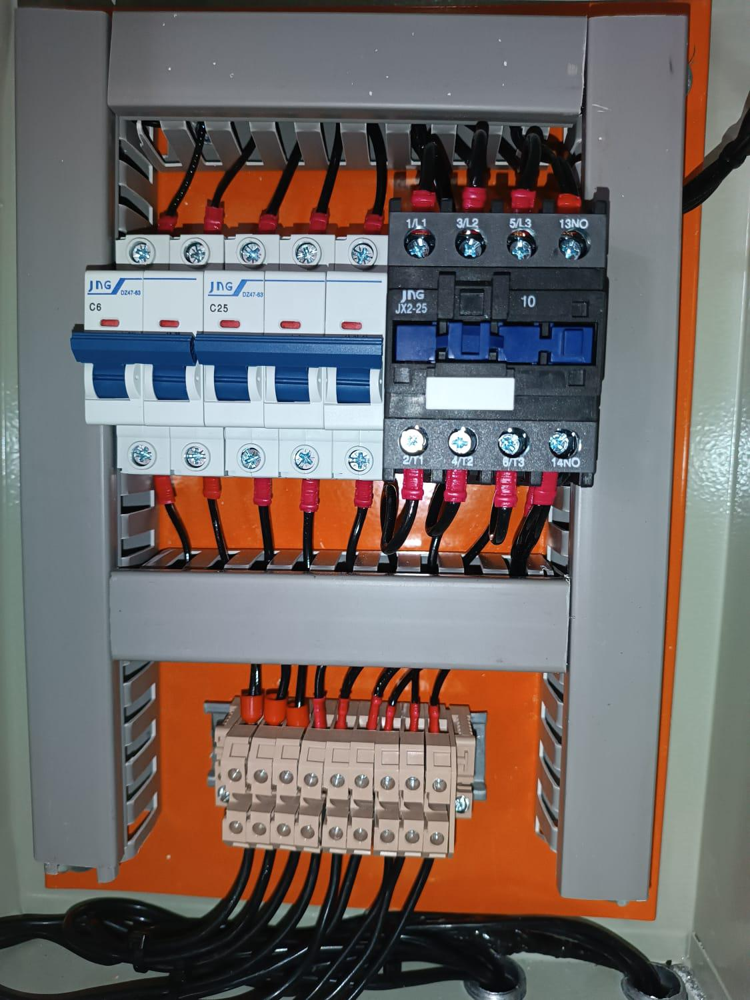

Instalações Elétricas | Sistemas de Incêndio | Iluminação Técnica e Decorativa
Deodato Elétrica é especializada em instalações e manutenções elétricas, atendendo a projetos de pequeno a grande
porte em residências, comércios e ambientes industriais. Com uma equipe qualificada e comprometida, combinamos
experiência prática com conhecimento técnico atualizado, sempre em conformidade com as principais normas técnicas,
como NBR 5410, NBR 14039 e NBR 17240. Valorizamos o planejamento rigoroso, a organização e o acabamento de
qualidade, pois acreditamos que uma boa instalação vai além da fiação: é também sobre segurança, eficiência e
durabilidade. Oferecemos soluções inteligentes e um atendimento transparente, para que nossos clientes fiquem
tranquilos, sabendo que seu sistema elétrico está funcionando de forma segura e eficiente.
Serviços
Montagem de quadros de comando e distribuição
Instalação de DPS com aterramento conforme NBR 5410
Sistemas de alarme e detecção de incêndio - NBR 17240
Iluminação técnica e decorativa (LED, spots, ripados)
Infraestrutura elétrica com eletrocalhas e eletrodutos
Atualização de sistemas antigos com distanciamento adequado
Interpretação e execução conforme NBR 14039 (BT/MT)
Diferenciais Técnicos
Planejamento e organização conforme projeto
Acabamento limpo e funcional
Testes de continuidade, aterramento e funcionamento
Registro visual e orientações técnicas ao cliente
Projetos Realizados
Adequação de Caixa Geral - No Fire
Redução de riscos, manutenção segura, proteção para futuras operações e conformidade técnica.
AntesDepois
Reforma de Quadro de Distribuição - No Fire
Normas atendidas, disjuntores atualizados, melhor organização e segurança.
Antes
Depois
Iluminação Ripada - Tecnobre Engenharia
LED em ripado com estética moderna e eficiente.
Projeto 1Projeto 2
Quadro de Comando - Bomba de Incêndio - No Fire
Desenvolvido para operar com excelência em emergências: layout técnico inteligente, canaletas otimizadas e
acionamento seguro com contator JNG. É proteção com padrão profissional.

Execução do quadro de comando com acionamento confiável
Execução de quadro de comando para bomba de incêndio de 4 CV em rede trifásica
Disjuntor bipolar dedicado ao circuito de comando
Disjuntor tripolar para proteção do motor trifásico
Contator JNG JX2-25 para acionamento confiável
Barramentos de terminais para a organização dos cabos
Canaletas para roteamento e proteção dos cabos
Identificação padronizada dos circuitos
Separação física entre circuitos de potência e de comando
Instalação de DPS - No Fire
Proteção contra surtos com aterramento individual e instalação profissional em trilho DIN. Eficiência,
segurança e conformidade com a NBR 5410.
Instalação de DPS em trilho DIN com aterramento individual
Instalação de Dispositivo de Proteção contra Surtos (DPS) conforme NBR 5410
Aterramento individual dimensionado
Montagem em trilho DIN dentro do quadro de distribuição
Proteção de equipamentos contra picos de tensão e descargas atmosféricas
Organização e padronização visual da instalação
Verificação de continuidade e testes de funcionamento
Documentação e orientação final ao cliente
DPS em Elevadores - No Fire
Proteção trifásica para sistemas de transporte vertical com normas técnicas respeitadas.
Sistema implementado para mitigar riscos de sobretensões atmosféricas e manobras, em
conformidade com
as normas técnicas vigentes para sistemas de transportes verticais.
Sistema trifásico de 220/380V, composto por três Dispositivos de Proteção contra Surto (DPS) por elevador, um para cada fase, instalados junto às chaves seccionadoras, garantindo proteção direta.
Conexões realizadas com condutores adequadamente dimensionados e terminais prensados.
Aterramento individual dos DPS em conformidade com a NBR 5410.
Organização dos cabos em canaletas, acompanhada da devida identificação dos circuitos.
Fixação dos DPS em trilho DIN para facilitar a manutenção.
Realização de testes de continuidade do aterramento e verificação do funcionamento dos dispositivos.


.jpg)